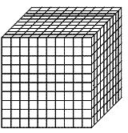
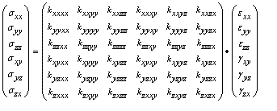
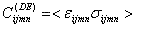

During homogenization, an equivalent homogeneous coarse-scale rigidity tensor for general anisotropic elasticity is determined from a spatially heterogeneous fine-scale isotropic elastic stiffness distribution. For this reason homogenization is termed a scaling up technique. The general procedure of homogenization is visualized in the table below. Distributed values of Young’s modulus and Poisson’s ratio are needed for input and homogenization leads to a symmetric rigidity tensor, which has a matrix with 21 independent stiffness components. For this purpose a separate finite element model with a structured mesh is required.
| Input Þ | Homogenization Þ | Output |
|
Distributed E Distributed n
|
Finite Element Analysis

|
21 stiffness parameters to feed general anisotropy |
A cubic-shaped volume-model is considered. For homogenization this volume is assumed periodic. This means that the block-shaped volume repeats itself at multiples of a distance equal to the edge length of this volume.
For this 3D model the six faces of the block-shaped volume are denoted with Sx1, Sx2, Sy1, Sy2, Sz1, Sz2. Face Sx1 denotes a face with its normal in x-direction with x=x1. These mean that for example Sx1 and Sx2 are two opposite faces. The dimensions of the block are:
Dx = x2 – x1
Dy = y2 – y1
Dz = z2 – z1
Since we consider a cubic model, note that Dx = Dy = Dz.
The homogenization approach comprises nine different load sets. These load sets are denoted as (AB=) xx, yx, zx, xy, yy, zy, xz, yz and zz. In each load set displacement differences between opposite edges are applied. These are so-called generalized periodic boundary conditions. The reasoning is that a periodic material will also show periodic displacement fields. All displacement components of pairs of opposite points are set equal. So, for instance the x-, y- and z-displacements of each point of face Sx1 are set equal to the displacements of the corresponding points of face Sx2. For each load set there is one exception: the constant displacement differs.
Set XX: dx(Sx1) = dx(Sx2) - Dx
Set YX: dx(Sy1) = dx(Sy2) - Dy
Set ZX: dx(Sz1) = dx(Sz2) - Dz
Set XY: dy(Sx1) = dy(Sx2) - Dx
Set YY: dy(Sy1) = dy(Sy2) - Dy
Set ZY: dy(Sz1) = dy(Sz2) - Dz
Set XZ: dz(Sx1) = dz(Sx2) - Dx
Set YZ: dz(Sy1) = dz(Sy2) - Dy
Set ZZ: dz(Sz1) = dz(Sz2) - Dz
dx(Sx1) is the displacement of face Sx1 in direction x.
Note that we are not prescribing displacements, but just displacement differences. This means that load set XX results on average in a strain exx equal to 1.0.
The goal of the homogenization approach is to find the effective stiffness. The resulting stiffness is denoted as a 6x6-rigidity matrix:

The advantage of the generalized periodic boundary conditions is that the 36 components of this matrix are obtained by using the displacement-energy method:

The displacement-Energy averaging (DE) is used because it always provides a symmetric and positive definite rigidity tensor.